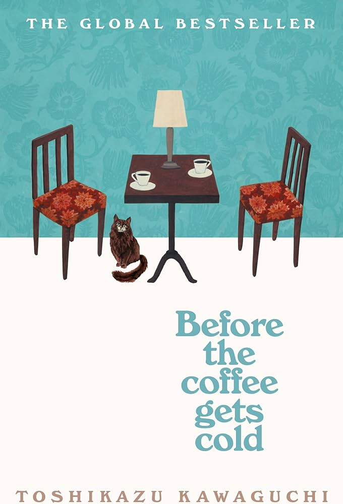

Paper Crane Pages

Magical Realism
Magical realism is a literary genre where the fantastical quietly emerges within the fabric of ordinary life. In these stories, the realistic and the surreal coexist—talking cats, time bending, or spirits appearing—without surprise or explanation. The genre blends elements of myth, folklore, and dreamlike imagery with the everyday, creating a narrative style that feels both grounded and otherworldly. Magical realism invites readers to see the familiar through a lens of wonder and mystery. As described in Oxford Reference, magical realism typically features “a strong narrative drive, in which the recognizably realistic mingles with the unexpected and the inexplicable,” combining “elements of dream, fairy story, or mythology… in a mosaic or kaleidoscopic pattern of refraction and recurrence” (Oxford Reference).
Before The Coffee Gets Cold
Written by Toshikazu Kawaguchi
Translated by Geoffrey Trousselot
Synopsis
Hidden in a quiet alleyway in Tokyo, there’s a café that’s been brewing coffee for over a hundred years. But it offers more than just drinks—it gives visitors the chance to travel back in time. In Before the Coffee Gets Cold, four people take that journey to reconnect with those they’ve lost, from a forgotten love to a sister they never got to say goodbye to. But time travel comes with rules: you must sit in a specific seat, never leave the café, and return before the coffee gets cold (Good Reads).
